Hidaka, Kochi: things to do, food and stays
Hidaka · Kochi
Hidaka
Highlighted on the Kochi map.
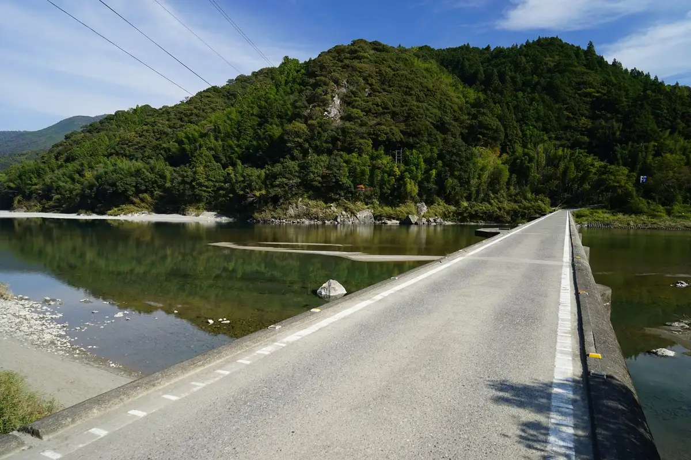
Stay
MURA YADO ARUMO
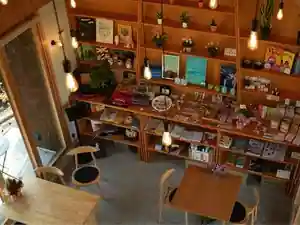
MURA YADO ARUMO
Dining
レストラン高知
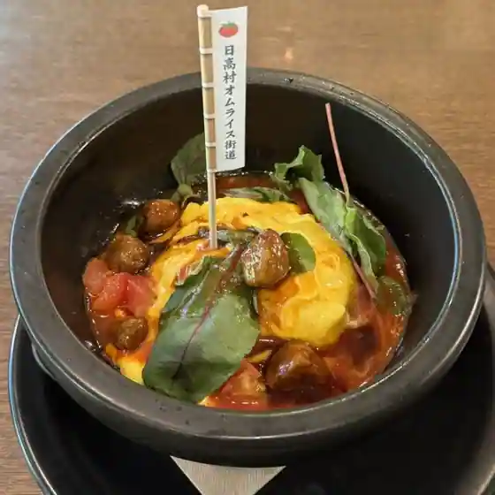
Restaurant Kochi
マンマ亭
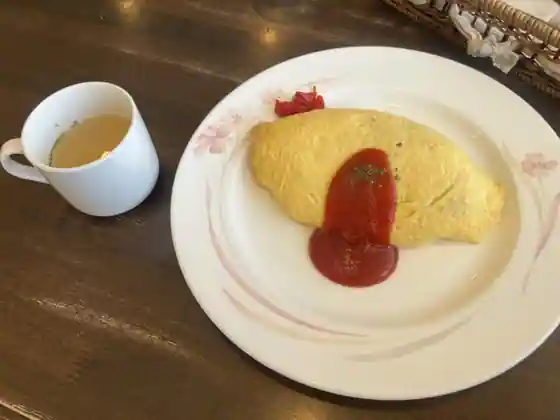
Manma Tei
芋舗 芋屋金次郎 日高本店
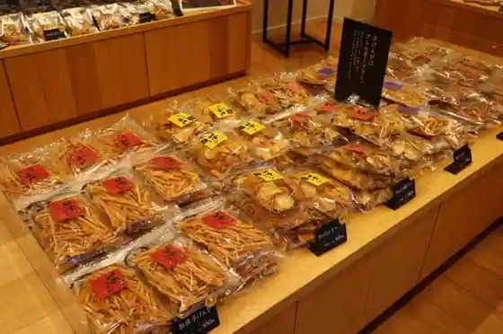
Imo Ho Imo Ya Kinjiro Hidaka Hon
ムラカフェ ひだか
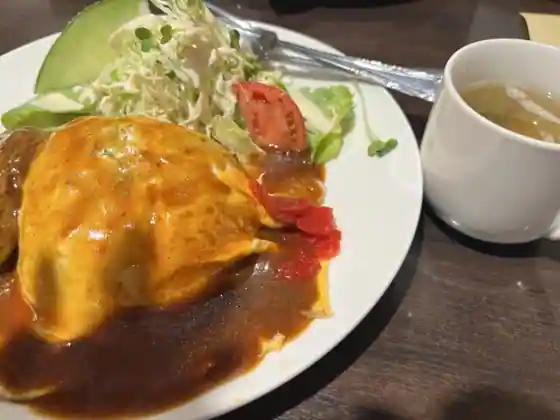
Mura Cafe Hidaka
とまとすたんど
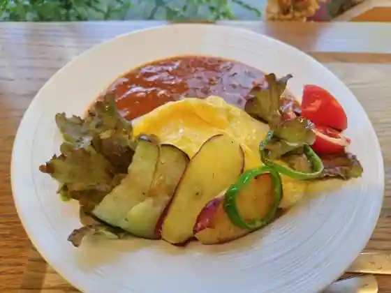
Tomatosutando
屋根の上のガチョウ
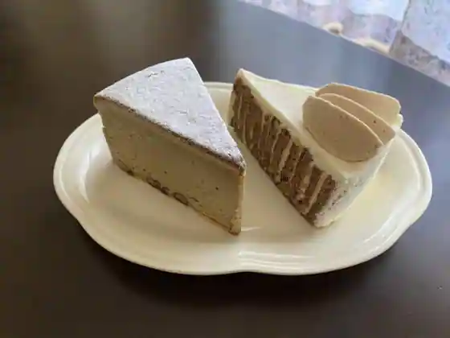
Yane No Ueno Gachou
キッチンリトルシェフ
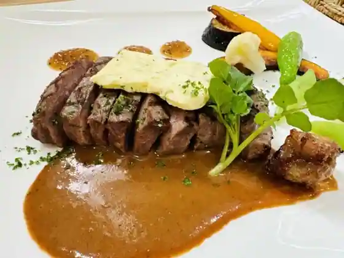
Kitchen Ritorushiefu
わのわ
Wanowa
渋谷食品
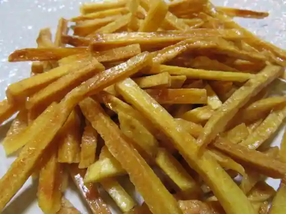
Shibuya Shokuhin
お食事処 サンフラワーレスト
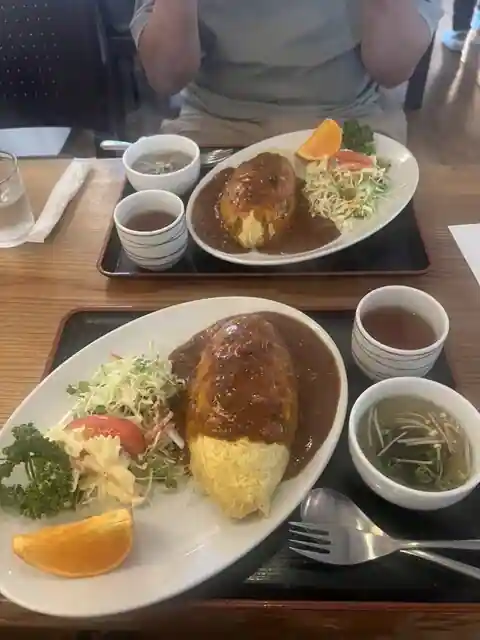
O Shokuji Tokoro Sanfurawaresuto
とく乃屋
Toku No Ya
龍鳳
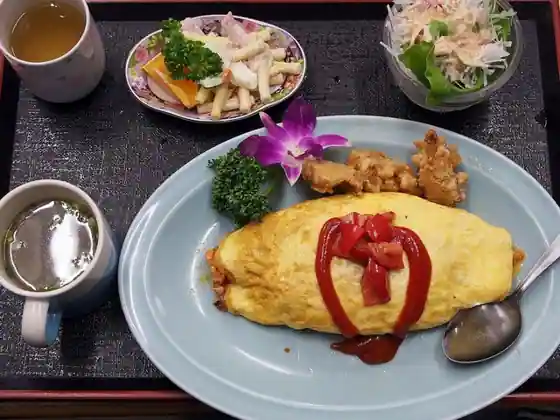
Ryuho
村の小さな台所 おきな
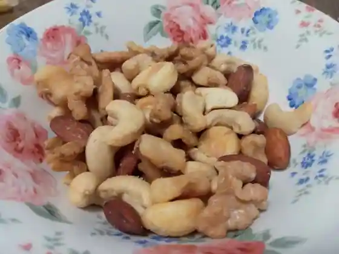
Mura No Chisa Na Daidokoro Okina
グリーンフィールゴルフ倶楽部
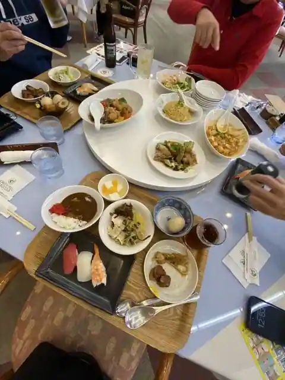
Gurinfirugorufu Kurabu
ミライエキッチン
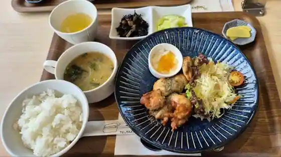
Miraie Kitchen
めだか池ギャラリー
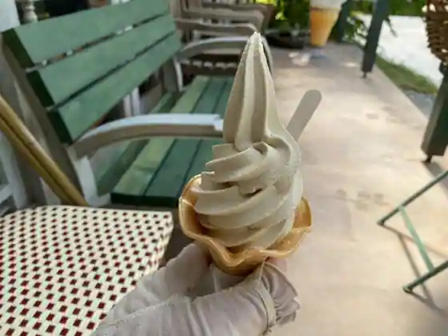
Medaka Ike Gyarari
えみ
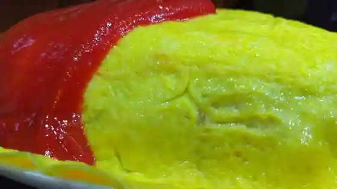
Emi
大阪なにわ 道頓堀たこやき
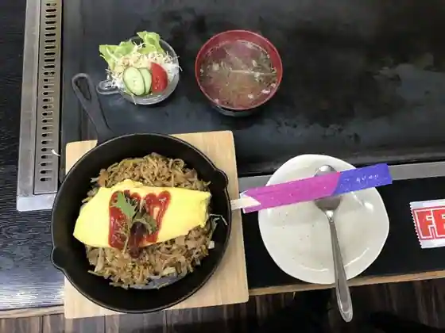
Osaka Naniwa Dotonbori Takoyaki
たこ焼きコロコロ
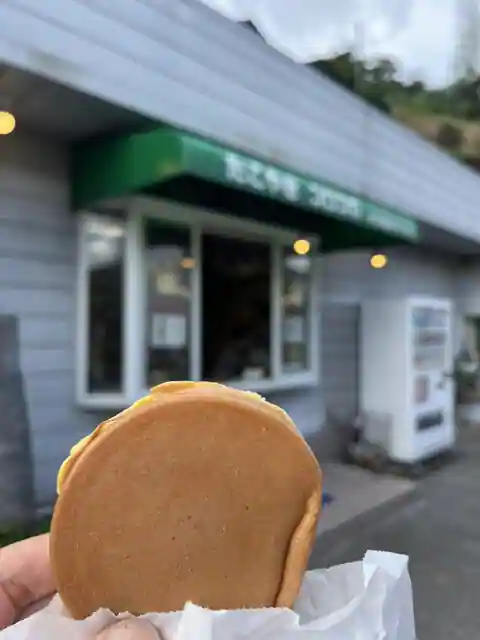
Tako Yaki Korokoro
苑
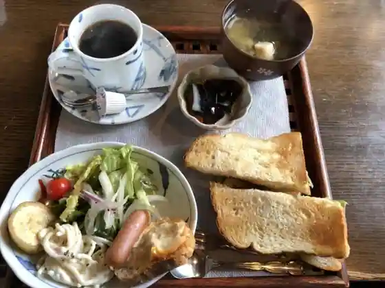
En
Sights
Nagoya Ya Chinkakyo
Hidaka Town Hall
Sho Village Shrine
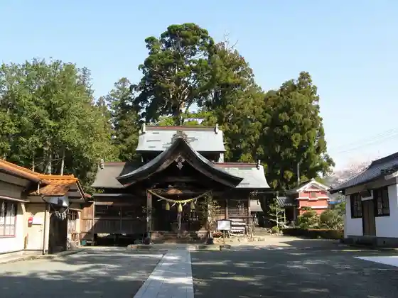
Kusaka Eki
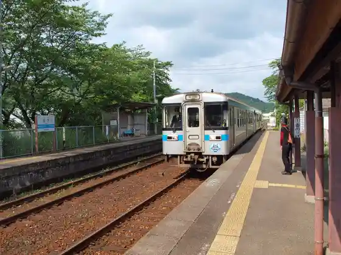
Yanase Hashi